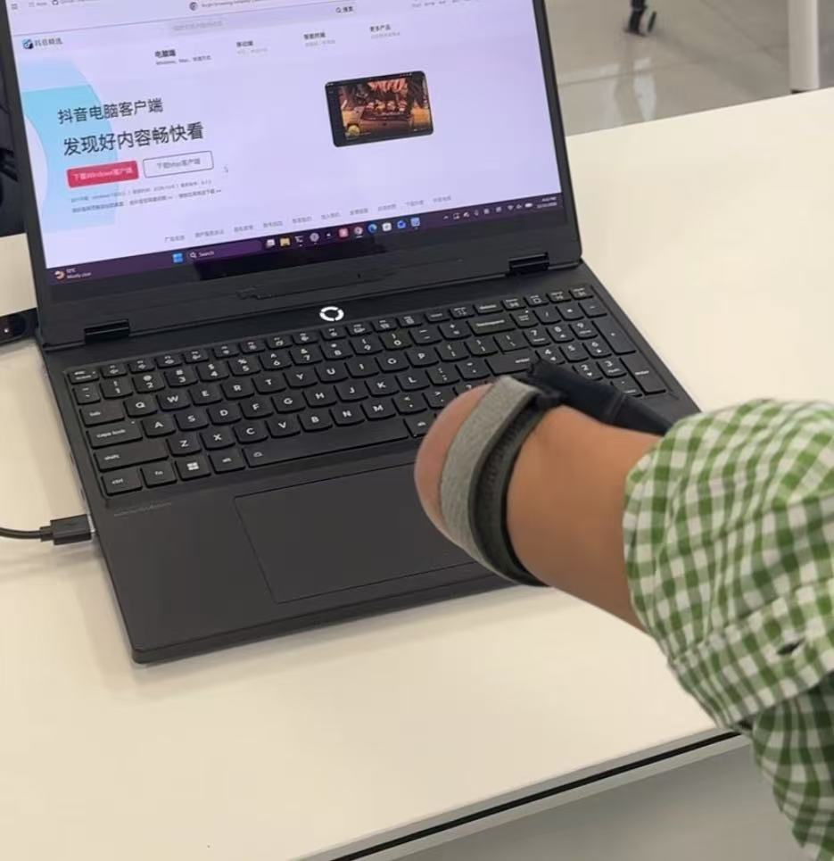
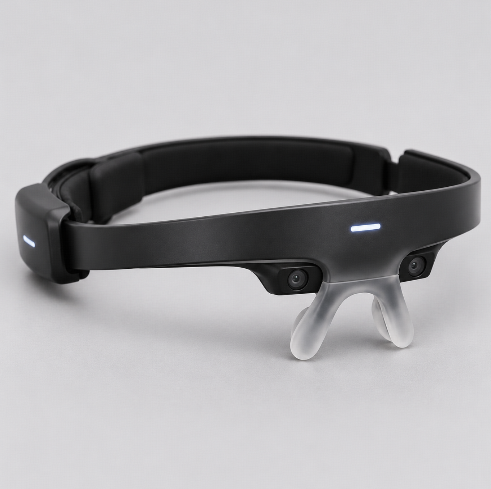
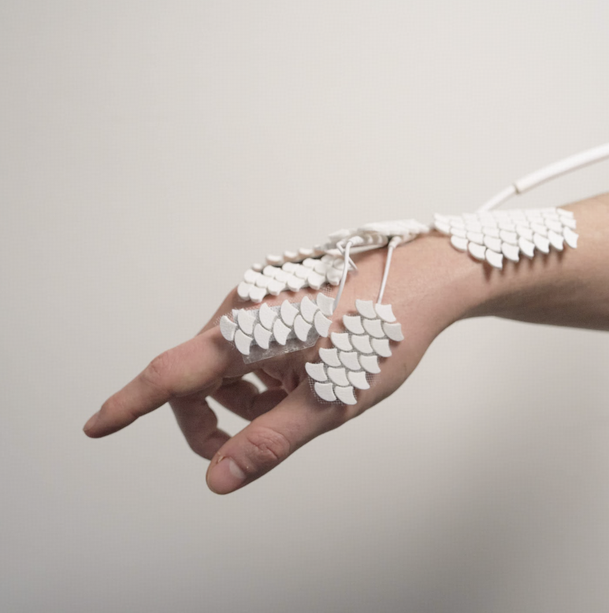
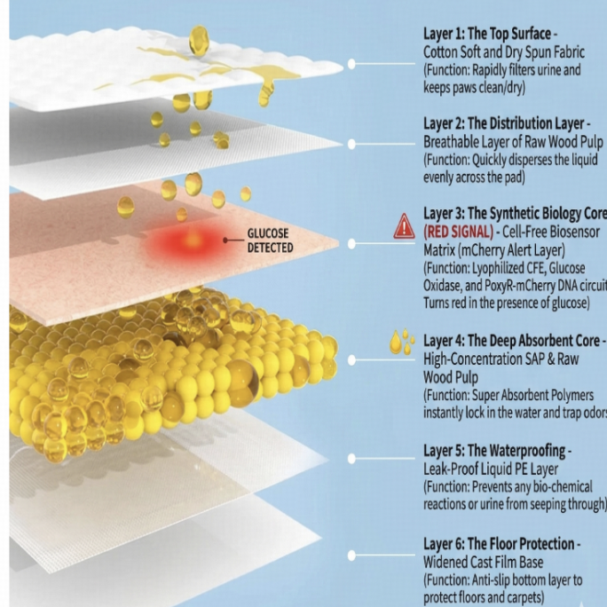
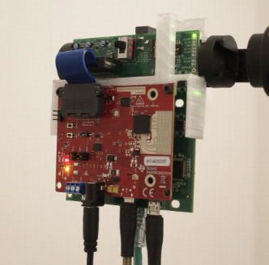
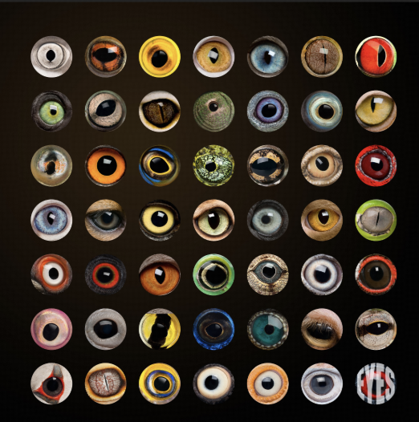

Salticid
Gaze + EMG assistive control
Cursor control · Residual-limb EMG · Adaptive interaction
A neuroengineer in practice and a natural scientist at heart. I explore how living systems perceive the world and how technology can expand the ways we sense, understand, and act. My work moves between Multimodal Biosensing, Neural Decoding, and Embodied Interaction.
I have a background in Computational Cognitive Science (magna cum laude, ’26) and Biology from Wellesley College, with research and course experience at MIT and the Max Planck Institute for Biological Cybernetics.
I'm currently a development engineer at a BCI startup building toward an sEEG-based brain foundation model. My work focuses on:
Two long-term questions I'm interested in are:
I'm grateful to my training in biology for showing me the wondrous world of how organisms and their societies actually work; in computer science for teaching me how to formalize and build; and in philosophy for giving me an abstract and reflective foundation for the nature of my inquiry and creation <3
Outside the lab, I enjoy photography, learning languages, playing music (Guzheng), and theater. I've also been co-running an arts education NGO for children since 2021.

Gaze + EMG assistive control
Cursor control · Residual-limb EMG · Adaptive interaction

Biosensing EEG + eye tracking
Facial Expression Sensing · Wearable hardware

AI controlled EMS system for muscle control
Human Augmentation · EMS · VLM

Cell-Free Detection of Urinary Glucose on a Freeze-Dried Paper Substrate
Synthetic Biology · Codon optimization · Iterative circuit design
Multimodal sensor processing + annotation
Human-in-the-loop AI · Data synchronization · Behavioral annotation

Resting-state mmWave sensing for HRV estimation
Contactless sensing · Physiological computing · Unobtrusive interfaces

Exploring animal vision through VR
Animal perception · Multimodal simulation · Virtual reality